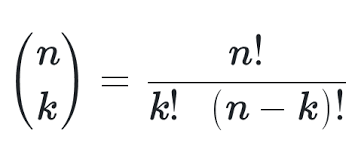
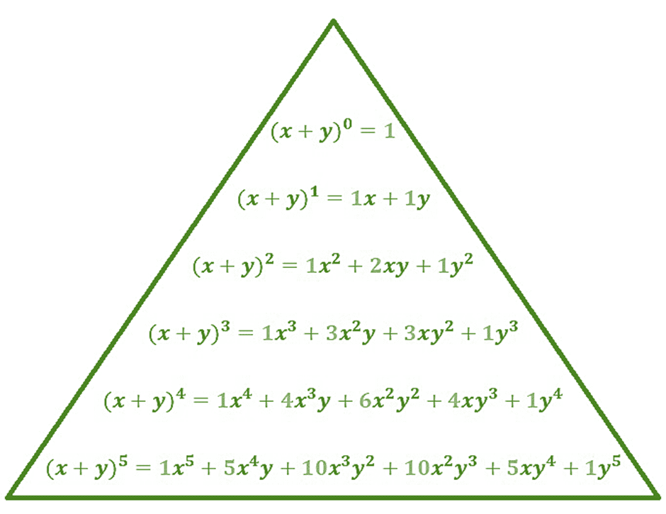
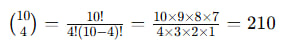

Binomial Coefficients
We hit week 4 of diving into Discrete Mathematical Structures in Computer Science, it remains a smooth journey as I find the topics enjoyable and easy to grasp. As we transitioned into our latest topic, exploring binomial coefficients, the elegance of combinatorial mathematics unfolds, offering a fascinating insight into the intricacies of discrete structures. Finding the number of ways from a certain condition? I always find it fascinating how we can solve these problems using binomial coefficients, especially with an easy to understand formula.
Learning about the binomial coefficient is fascinating and it really made me realize the importance of precision and combinatorial thinking when solving problems. The binomial coefficient, often denoted as n choose k, represents the number of ways to choose k elements from a set of k elements without considering the order (see picture above). This may seem like a simple concept, but it has broad applications in various areas of mathematics, such as probability theory, combinatorics, and algebra.
The binomial coefficient serves as a fundamental component in binomial expansion, enabling the expansion of binomial expressions raised to positive integer powers using Pascal's Triangle or the Binomial Theorem, facilitating efficient computation of coefficients and terms in polynomial expansions.
Counting Four-Bit Strings with Exactly Four 1's, this is one of a Computer Science problem that will use binomial coefficients
In combinatorial mathematics, determining the exact count of strings satisfying specific criteria is a common problem. For instance, let's consider the task of counting the number of four-bit strings of length 10 that contain exactly four occurrences of the digit 1.
To solve this problem, we can employ the principles of the binomial coefficient. Here, we are essentially choosing four positions out of ten for the 1's to occupy, while the remaining six positions will be filled with 0's.
Using the binomial coefficient 10 combination 4, we can calculate the number of ways to select four positions out of ten, which is precisely the count of four-bit strings containing exactly four 1's. Evaluating this expression yields the result:
Thus, there are precisely 210 four-bit strings of length 10 that contain exactly four occurrences of the digit 1. This illustrates the practical application of binomial coefficients in counting arrangements that satisfy specific conditions, demonstrating the versatility and power of combinatorial methods in problem-solving within computer science and mathematics.